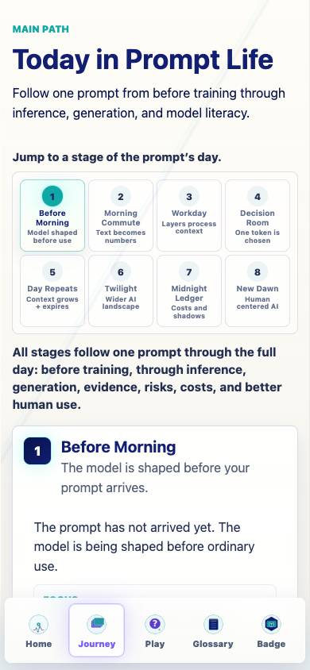
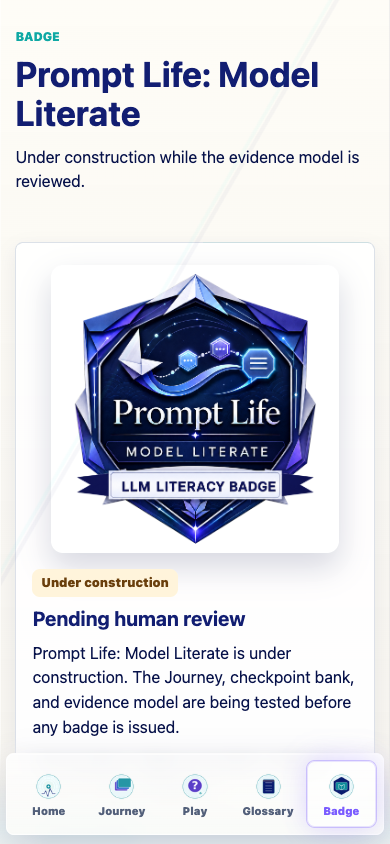
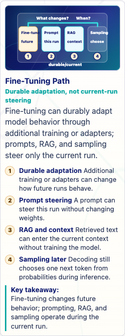
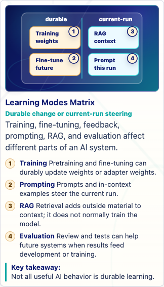
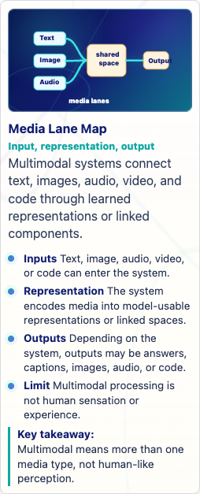
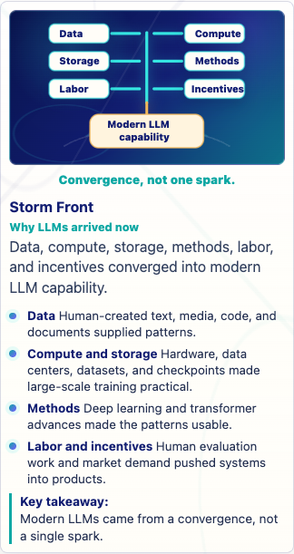
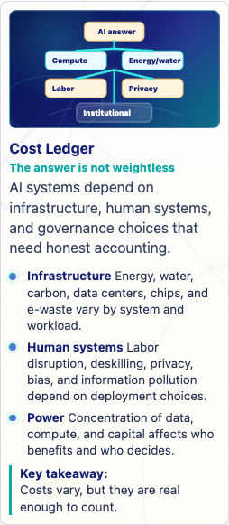
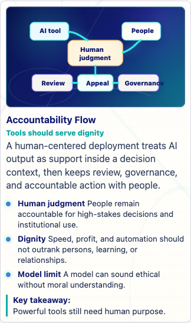
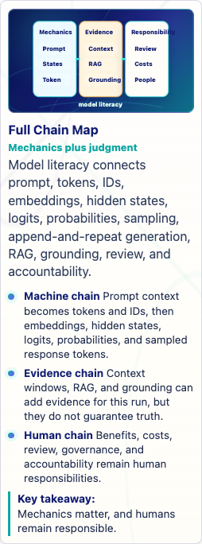

Prompt Life v0.28.1 Final Response With Screenshots
Generated 2026-06-13T18:54:39.379Z. This wraps the v0.28.1 language cleanup and visual-aid hard reset response with representative screenshots.
39Journey visuals
0P0/P1 remaining
19visuals fixed
3temporary/testable
What Changed
- Removed banned model-mystery wording from current learner-facing source/docs and added
npm run audit:language. - Added
npm run audit:visual-overflowfor 320px and 390px review-route overflow checks. - Mapped all 39 Journey visuals to one of six canonical templates.
- Rebuilt or simplified 19 visual aids, keeping precise instructional text in HTML callouts and shortening diagram labels.
- Captured every visual at 390px and 320px, plus smoke screenshots for Journey, Play, Glossary, and Badge.
- Bumped visible/package version to
v0.28.1.
Language Replacements
Current learner-facing copy now uses mechanism-centered language such as unexplained shortcut, unsupported story, single event, special wording, built-in morality, and hidden model powers depending on context. The new language audit passes against current source/docs.
Template Distribution
| Template | Count |
|---|---|
| Atmospheric Scene | 3 |
| Taxonomy Map | 11 |
| Comparison Board | 9 |
| Mechanism Flow | 9 |
| Probability Bars | 3 |
| Context Tray / Stack | 4 |
Verification
| Command / QA | Result |
|---|---|
npm run typecheck | Passed |
npm run build | Passed; existing large-chunk warning remains |
npm run build:pages | Passed; existing large-chunk warning remains |
npm run audit:answers | Passed |
npm run audit:checkpoints | Passed |
npm run audit:question-clues | Completed; 43 answer-length warnings and 36 term-echo candidates remain as review signals |
npm run audit:learner-copy | Passed |
npm run audit:language | Passed |
npm run audit:visual-aids | Passed: 39 aids, 0 mismatches, 0 readiness issues |
npm run audit:visual-overflow | Passed: 39 aids at 320px and 390px |
| Browser QA | Badge, Journey, Play, and Glossary checked with no horizontal overflow; Badge shows v0.28.1 |
Known Issues
- Three visuals remain temporary but acceptable for small testing: Overfitting vs Generalization, Feature Vector, Tensor Block.
- Seven later Image 2 candidates remain: Prompt to Prediction, Broad Pretraining, Alignment Landscape, Borrowed Flames, Cost Ledger, Benefit Tiers, Accountability Flow.
- The Vite large JavaScript chunk warning remains and should be handled in a later code-splitting pass.
Representative Screenshots











